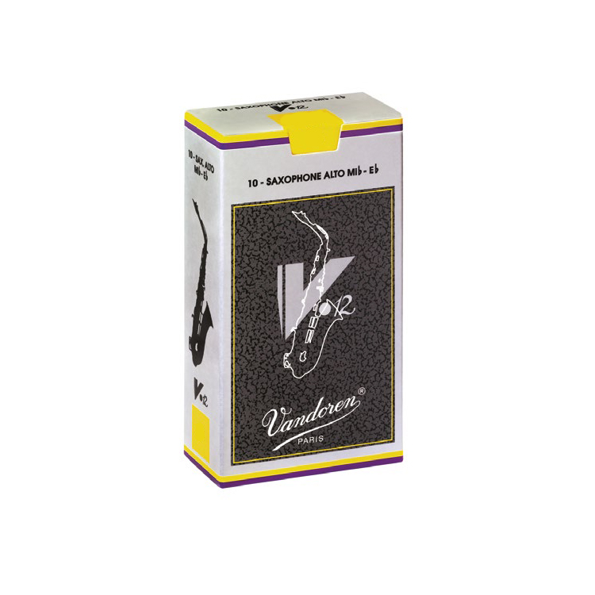

Vandoren V-12 трости
Описание товара
Трости для альт-саксофона Vandoren V-12 (Франция).
Характеристики товара
- Материал: тростник
- Заточка: классическая
- Срез: французский
- Упаковка: Flow Pack
| Толщина трости | 1 | 2 | 3 |
| 1,5 | 2,5 |
Подробное описание товара
Трость характеризуется очень точной атакой, равномерным тембром в каждом регистре, контролируемостью высоких нот, теплым, бархатистым звуком, предоставляя музыканту уникальные выразительные возможности.